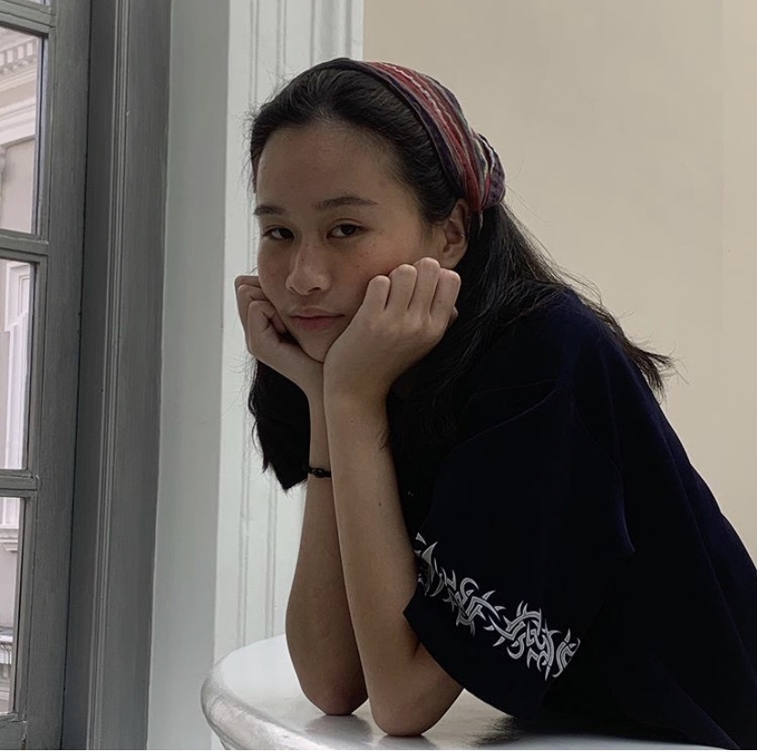

About
|  | Hello my name is Charmaine Tam but my peers call me Charlie! I live at Macritchie Reservoir … got a lot of mosquitos. I am currently a Year 2 studying Experience and Communication Design. |
As an artist and a designer I chose this module because I felt that this would challenge me to integrate science and art. When I googled “digital fabrication”, I saw a project by Neri Oxman pop up and as a fan of her I became interest in this module.
As someone who hopes to be an artist, I feel that by learning a new medium it would expand my knowledge and the art that I can create in the future.
I hope to learn by the end of this module how to efficiently work fusion 360 and be fully independent in creating 3D prototypes. My goal would be to use what I have learnt from this module and be able to embark on my own projects to create things out of nothing. It would be pretty cool too if I was able to create art out of this.